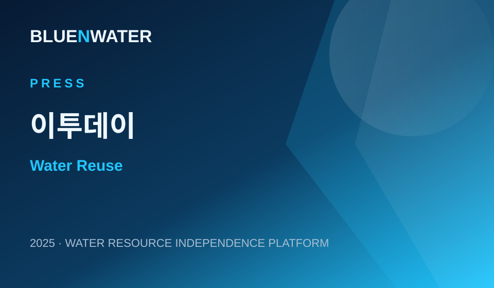
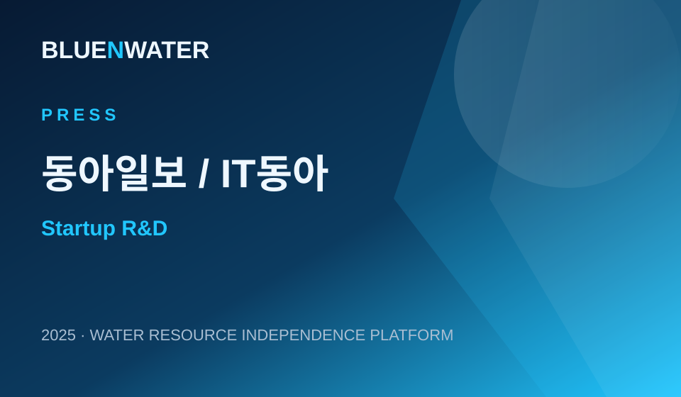
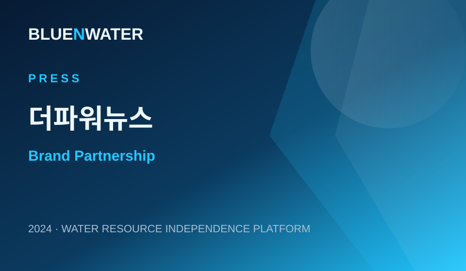
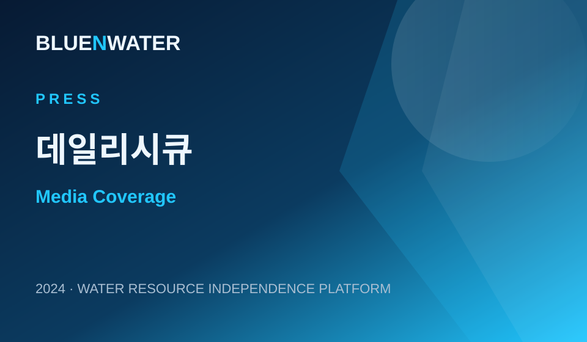
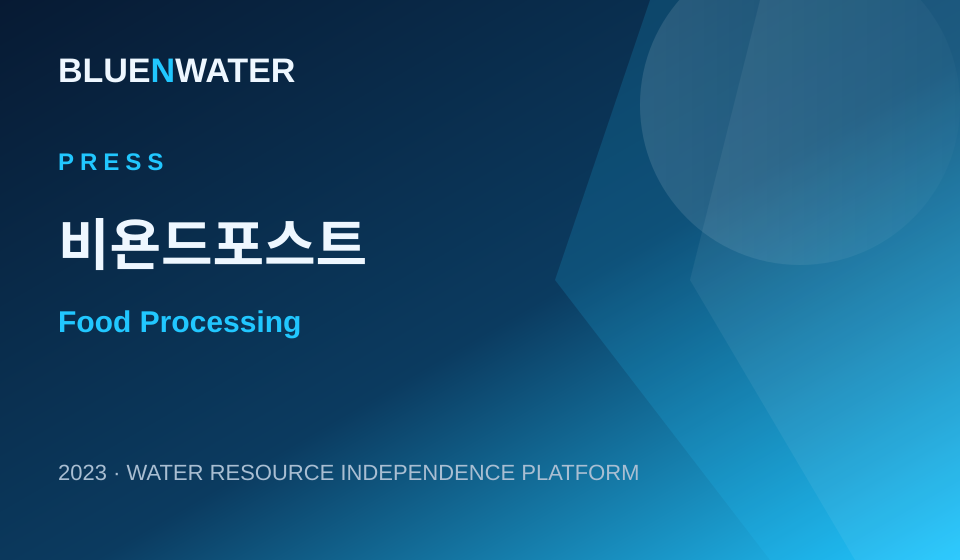
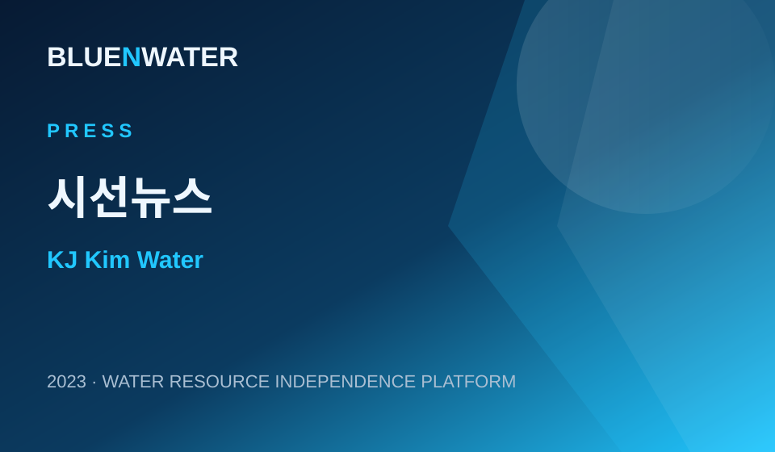
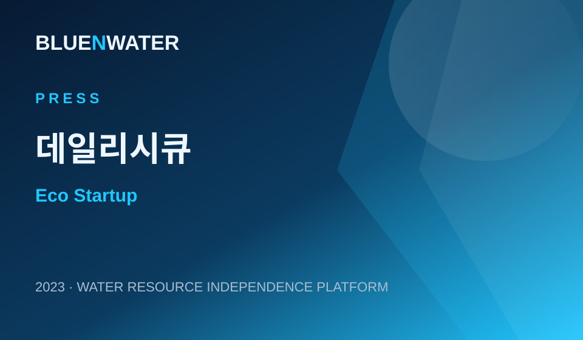
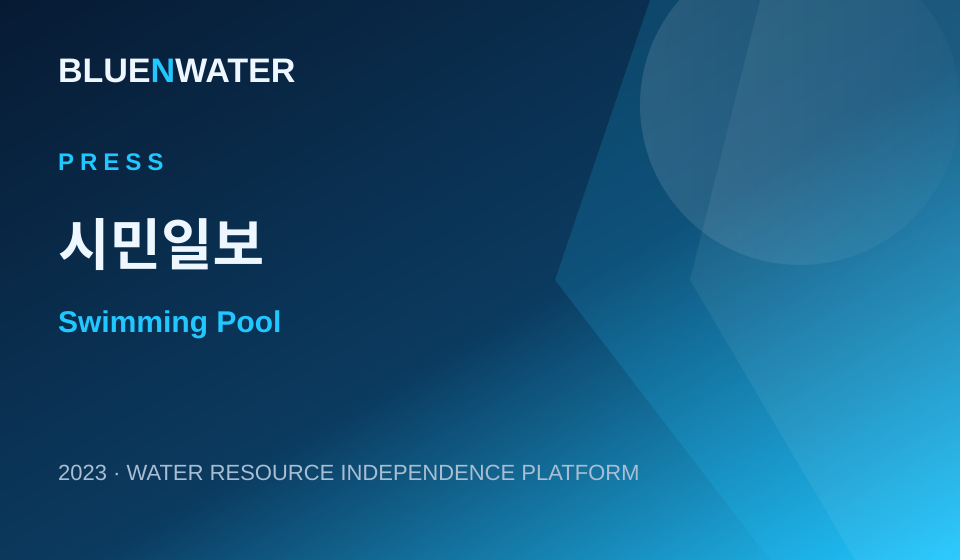
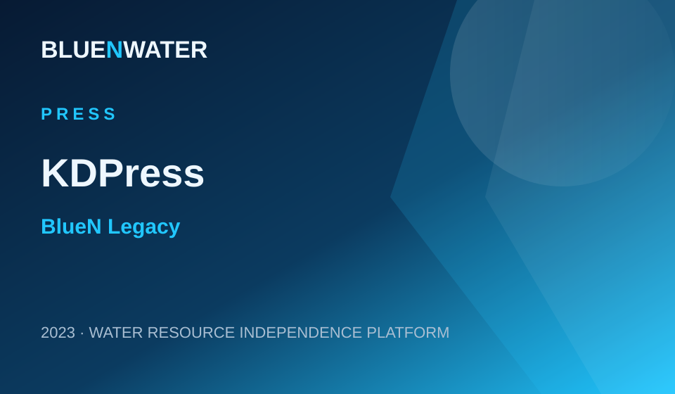
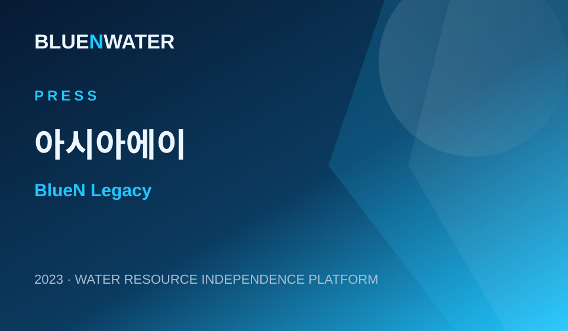

Press Coverage
External articles supporting BLUE N WATER’s technology validation, market entry and project references. Click each card to open the original article.
BLUE N WATER Coverage
BLUE N WATER supplies advanced water-quality system to a kids pool in Chukseok-dong
Coverage of BLUE N WATER’s chemical-free, low-power water-quality solution for kids pool and swimming pool applications.
기사 보기 →
Watertech SMEs target the water industry with wastewater reuse and pollutant reduction
An article covering BLUE N WATER’s industrial water-treatment direction in wastewater reuse and pollutant reduction.
기사 보기 →
Re-Challenge Success Package in Seongnam — modular and automated water-treatment solutions
An interview with CEO Jung Yoon Jae and a feature on BLUE N WATER’s modular water-treatment roadmap.
기사 보기 →
BLUE N WATER participates as a sponsor of PORSCHE NIGHT PARTY 2024
Coverage of BLUE N WATER’s brand partnership and sponsorship activity.
기사 보기 →Advanced water-quality system supplied to Master Kids Yangju Okjeong
Coverage of the Be2rsheba system in children’s swimming pool water-quality management.
기사 보기 →
BLUE N WATER media coverage
Media coverage related to BLUE N WATER’s water-treatment technology and corporate activity.
기사 보기 →Rapid water-purification system installed at Paju Peace Farm
Coverage of a field deployment of a rapid water-purification system near the Civilian Control Line in Paju.
기사 보기 →
Advanced water-treatment solution introduced to a cabbage processing plant
Coverage of a food-processing water-treatment application in an industrial facility.
기사 보기 →
KJ Kim Water introduced at the 12th Gim Day event in Goheung
Coverage of BLUE N WATER’s KJ Kim Water solution for seaweed processing water.
기사 보기 →
Selected for the Ministry of Environment’s 2023 Eco Startup Program
Coverage of BLUE N WATER’s selection for the 2023 Eco Startup Program.
기사 보기 →
Be2rsheba system installed at Swimming Elephant kids pool in Sejong
Coverage of Be2rsheba installation for public-use swimming pool water quality.
기사 보기 →BlueN Legacy
Legacy coverage is separated to preserve pre/post acquisition history and technology references.

BLUE N legacy coverage on water-quality systems for public-use facilities
Legacy coverage retained separately for the pre/post acquisition and integration history.
기사 보기 →
BlueN legacy media coverage
Legacy coverage for business activity and technical deployments under BlueN.
기사 보기 →